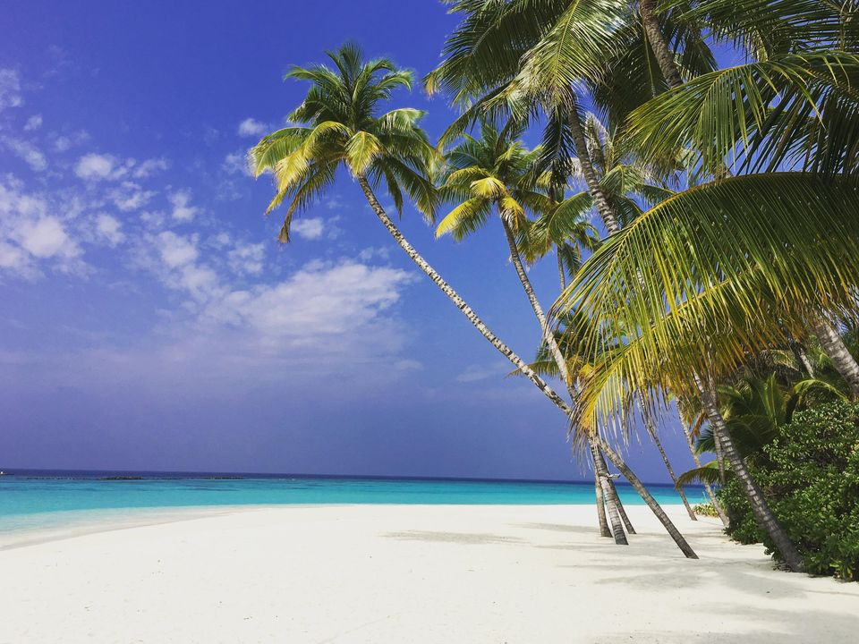
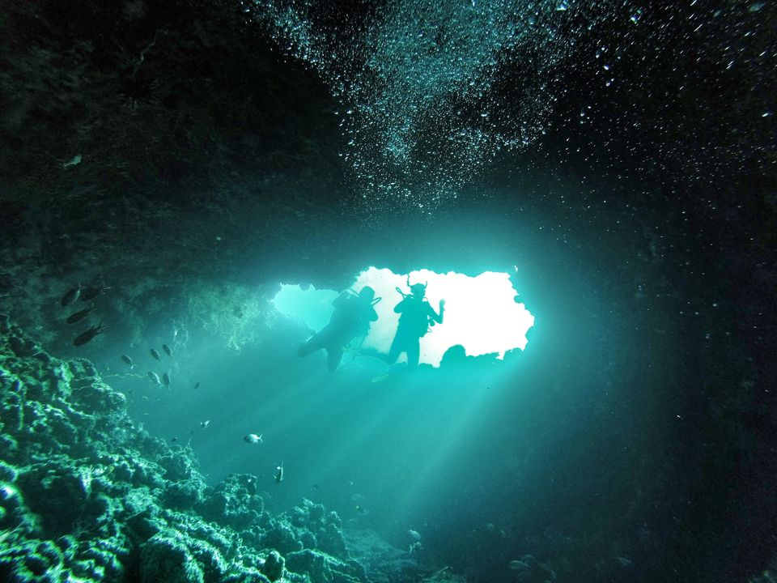
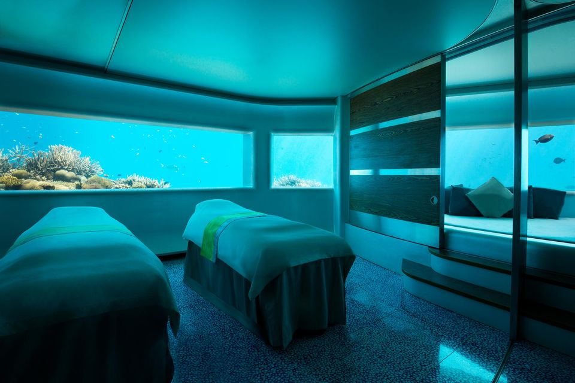
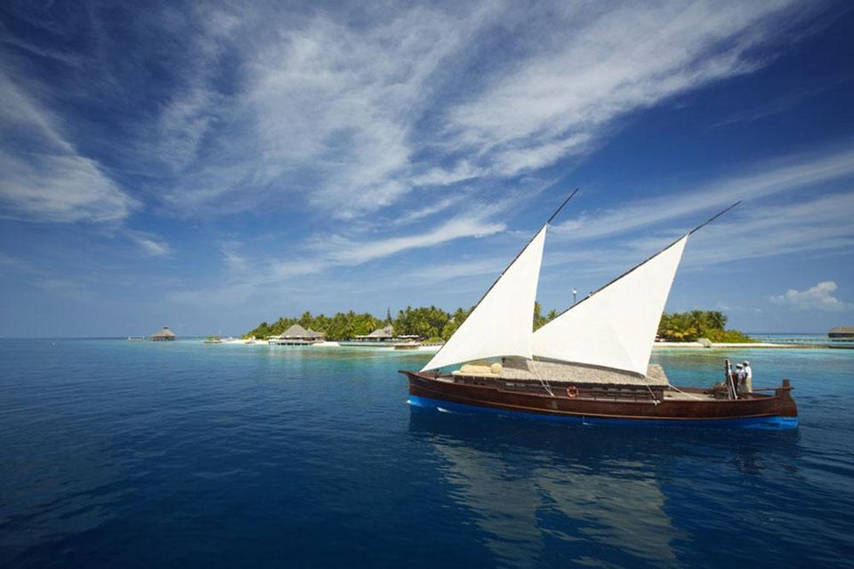
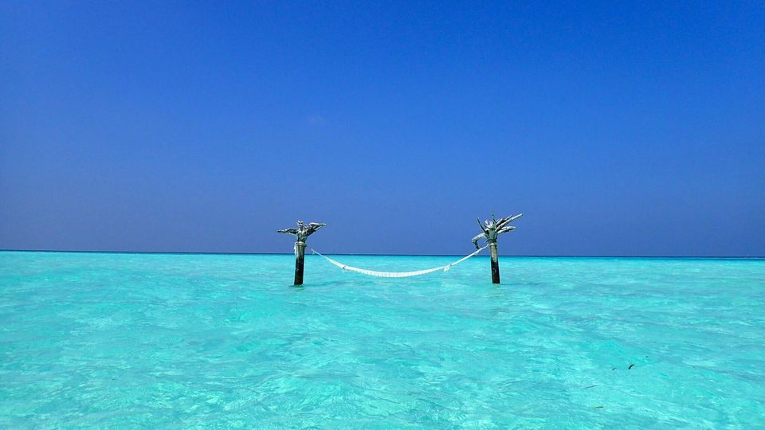

Things To Do -Sight To Visit
-

Private picnic on a sandbank
Recline back in your bean bag as you sample a pre-ordered picnic hamper full of Maldivian delicacies, lobster, cheeses, and (of course) a bottle of champagne. “A sandbank picnic is really special,” Lechner says. ‘You’ll have these amazing turquoise hues of water surrounding you and it literally glows because the water is quite shallow and surrounded by pristine, sugar white sand.”
-

Snorkelling and diving
Spot the usual suspects — schools of colorful tropical fish, reef sharks, tortoises, the odd ray if you’re lucky — or take a deep diving expedition to dive with whales and hammerhead sharks. “Hanifaru bay is the largest ‘feeding station’ in the world and is Unesco protected,” Lechner says. “The area is abundant in marine life due to large amounts of plankton that washes in which attracts the big draw cards, such as beloved Manta Rays.”
-

Underwater spa date
Enjoy “hot rocks, cold ice, couture facials, Champagne and truffles for the skin” at another world-first - an underwater spa experience at Huvafen Fushi.
“It’s the ultimate relaxation experience, receiving a treatment surrounded by glass walls that are staring out into the beautiful turquoise ocean while its marine life dance around you,” Lechner says.
-

Traditional dhoni sunset cruise
Perfect for a family-packed holiday, is a sunset cruise on a traditional Maldivian boat, where adults can enjoy the view while the children keep a look out for the next school of dolphins.
“You might be lucky enough to literally spot hundreds of spinner dolphins, summersaulting right next to the boat,” she says.
-

Experience the local culture
The sand, sea and high-end luxury offered at most resorts in the Maldives may be more than enough for some but others might like to tap into the rich culture and heritage on, what locals refer to as, a “home” island. “It’s a good way to draw children away from the spoils of luxury,” Lechner says. Collectors will also appreciate Thulaadhoo for the arts and crafts.
Things To Do-Where To Eat
Ithaa Undersea Restaurant
For a unique experience, patrons of the Ithaa Undersea Restaurant, part of the Conrad Hilton Rangali Island resort in the South Ari Atoll, can enjoy contemporary European cuisine five metres below sea level.
Muraka
Situated in the idyllic South Ari Atoll is the Mirihi Island Resort, home to Muraka, a rustic, wooden restaurant built on the end of a jetty over the island’s lagoon.
Sala Thai
Sala Thai, which is part of the small six-room Sala Boutique Hotel, serves healthy and fresh food in authentic Siamese surroundings, amid tasteful wooden furniture and beautiful Asian artwork. This quiet restaurant, popular with native Maldivians, provides a relaxing escape from the bustling streets of Malé and features an outdoor courtyard area with overhanging trees perfect for an al fresco meal.
Shell Beans
The Shell Beans café company has been operating in Malé for over ten years and has two premises on the island; one on the northern edge overlooking Malé’s jetties and one on the other side of the island, on Ameenee Magu.
Seagull Cafe House
A stalwart of the Maldivian café culture, the Seagull Café House is a charming bistro situated on two levels. The lower level is a small, peaceful courtyard with sandy floors and trees providing shade for diners, while the upper level features a huge tree growing through the middle of the floor and great views of the bustle of the street below and the nearby Grand Friday Mosque.
Things To Do -Where To Sleep
Best Hotels in Maldives

COMO Cocoa Island